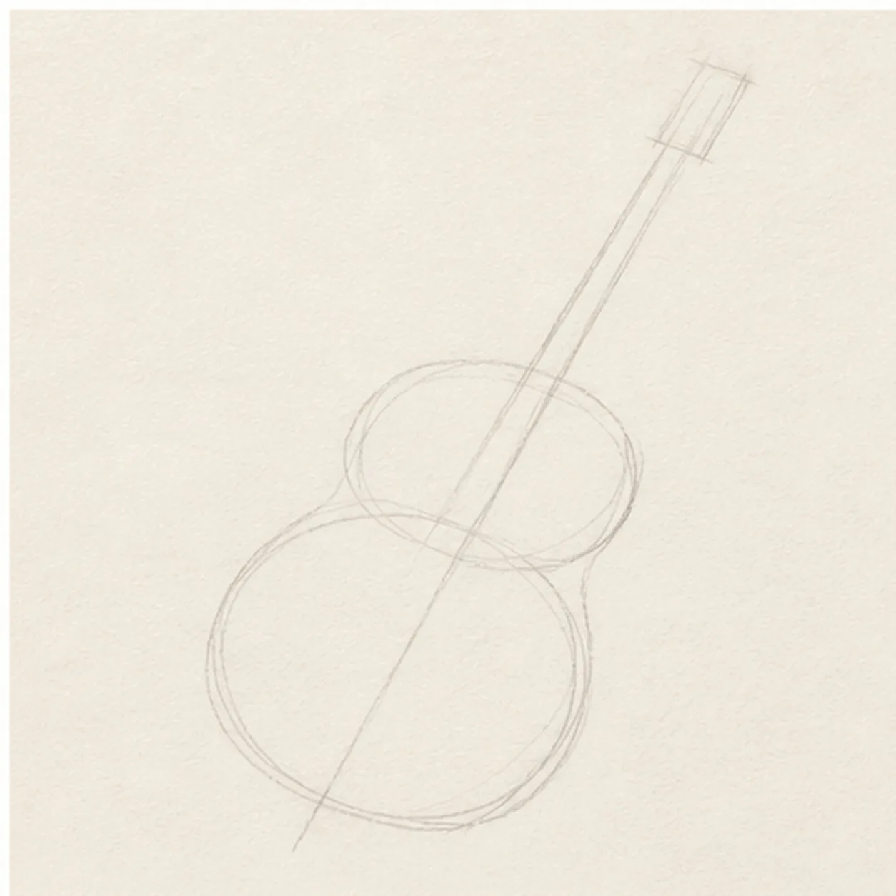
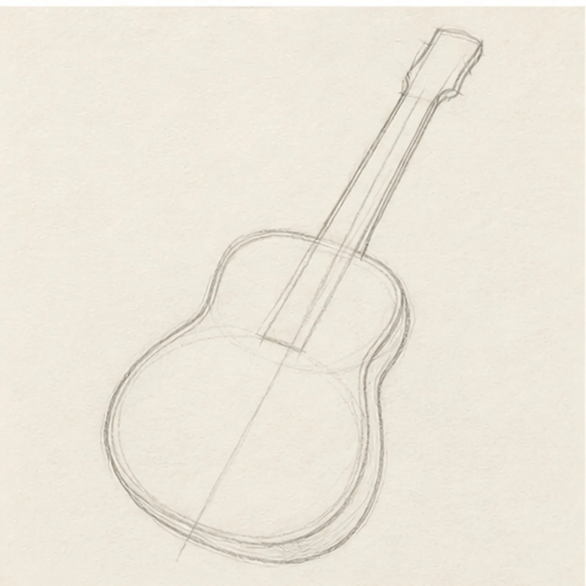
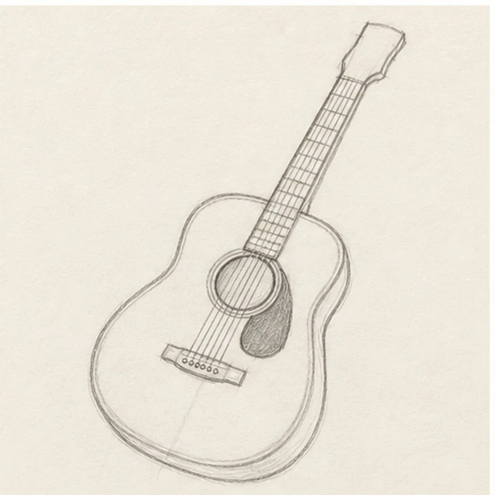
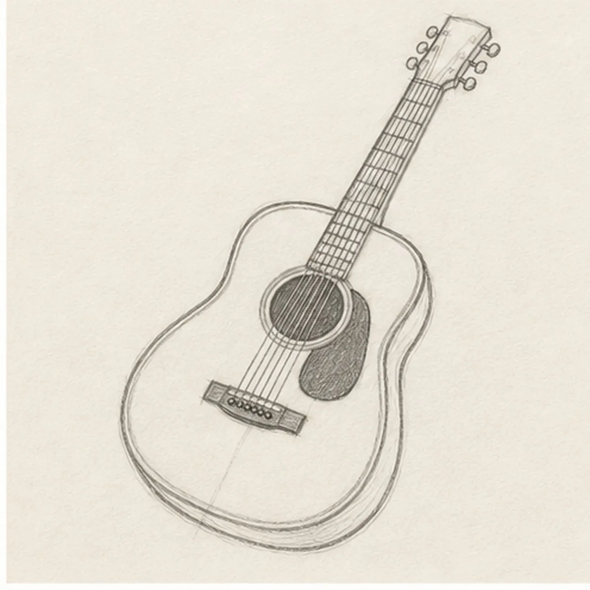
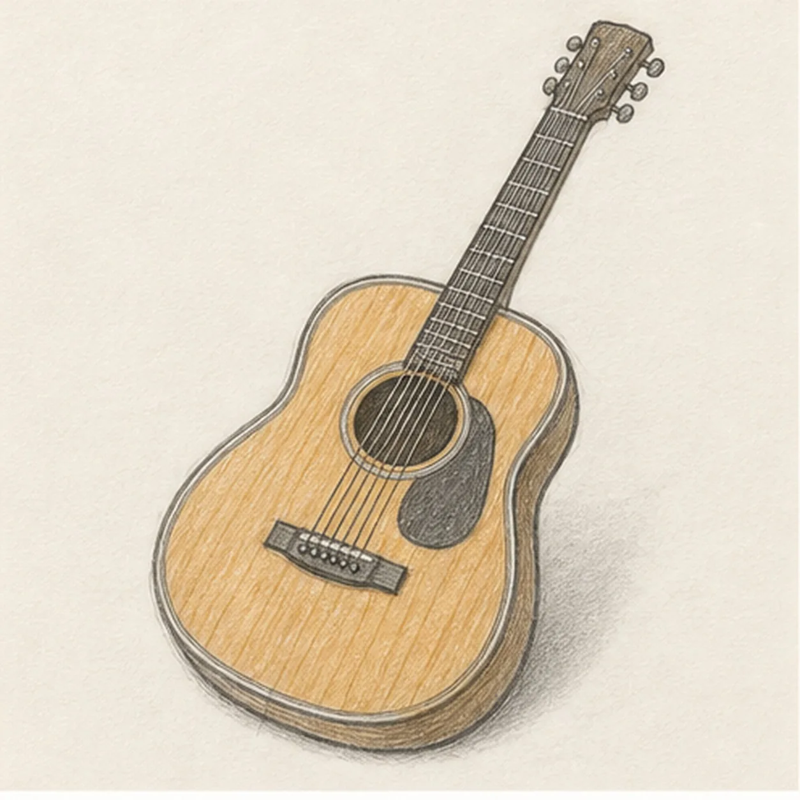

From the archive
Let's draw an acoustic guitar
Treat this as one small practice round: build the subject lightly, notice the shapes, then darken only the lines that help the finished sketch.
-
01

Set the guitar proportions
Draw one light diagonal center axis, place overlapping upper and lower body ovals around it, pinch in two waist guides, then extend a long neck and small headstock block.
Sketch tip: Ghost the full center axis before touching down. Compare the empty spaces on both sides of it so the body stays balanced without becoming mechanically symmetrical.
-
02

Shape the guitar body
Wrap the guides with the rounded upper and lower bouts, narrow waist, long neck, and headstock, keeping the same diagonal pose.
Sketch tip: Rotate the page for each long outside curve and draw from one bout toward the waist. Reserve the narrow fingerboard footprint instead of finishing body detail beneath it.
-
03

Build the playing surface
Add the centered sound hole, fingerboard, bridge, saddle, simple pickguard, restrained fret marks, and six light strings to the established guitar.
Sketch tip: Use the center axis to line up the sound hole and bridge, then keep the strings parallel as they cross them. Draw the set lightly enough that you can correct spacing before darkening.
-
04

Finish the guitar hardware
Add exactly six tuning pegs, clarify the string paths from bridge to headstock, and trace the visible outer body seam.
Sketch tip: Count three tuners on each side before strengthening them. Squint at the neck once to make sure the strings still aim toward the center of the bridge.
-
05

Shade the warm wood
Add restrained ochre pencil to the established body, soft graphite depth to the fingerboard and hardware, a few directional grain marks, and one cast shadow.
Sketch tip: Pull the ochre strokes along the body length and leave narrow paper highlights near the curved edge. Two light passes feel more like wood than one solid fill.
-
06

Finish the guitar sketch
Strengthen the keeper contours and clarify the established body, neck, hardware, strings, warm wood color, grain, and cast shadow.
Sketch tip: Check that the sound hole, bridge, and neck still share one axis, then stop. A player, case, amplifier, room, or second instrument is not needed.